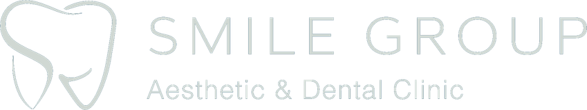
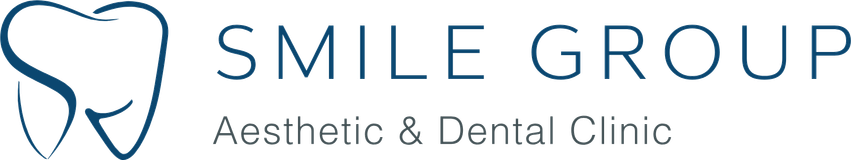

Bu sayfa "yarın ne yapıyoruz?" sorusunun cevabıdır. Her görevin sahibi, günü ve çıktısı yazılı — hiçbir iş "sonra bakarız"a kalmaz. Marka aksiyonları sarı ile işaretli.
Bu hafta tek hedefi var: yasal ve teknik zemini kurmak. Bu zemin olmadan hiçbir reklam yayına giremez.
Uluslararası Sağlık Turizmi Yetki Belgesi'nin güncel kopyası paylaşılır. Yoksa aynı gün başvuru süreci başlatılır. Kritik yol: bu olmadan yurt dışı reklam yasal değil.
10 kampanyanın dil/hedefleme kontrolü; fiyatlı kreatiflerin yalnız yabancı dilde kullanılacağı işaretlenir, kapsam dipnotları yazılır.
Portalın Kararlar sekmesinden tek tıkla: strateji onayı + senaryo seçimi (MİNİMUM / ÖNERİLEN / AGRESİF). Bütçe onayı gelmeden medya hesapları açılmaz.
Bio yeniden yazımı (kanıtlanabilir konum cümlesi), highlight yapısı, yetki belgesi + HealthTürkiye logosu yerleşimi, profil görselleri.
Meta Business + Google Ads kurulumu; TR hedefleme kapalı, otomatik hedefleme devre dışı şablonları hazırlanır (uyum listesi madde 2).
İçerik Takvimi'nden Ağustos'un 8+8 başlığı seçilir, senaryo kartları yazılmaya başlanır. Hekim takvimi için 3,5 saatlik blok talebi iletilir.
Reklamın ineceği zemin bu hafta kuruluyor: hasta adayının konuşacağı hat ve göreceği site.
Numara ayrımı (INT hattı), otomatik karşılama metinleri EN/DE/FR + diaspora için TR/AR, mesai dışı senaryosu, hızlı yanıt şablonları.
4 niyet akışı (bilgi / fiyat / gülüş testi / insana devir) + sıcak devir kartı. Koordinatör eğitimi: 5 dakika kuralı ve devir protokolü.
Ana sayfa + 4 tedavi sayfası + fiyat rehberi + aftercare + iletişim. Her sayfada yetki belgesi, HealthTürkiye logosu, künye.
ViewContent / Contact / SmileTest olayları kurulur, test tıklamasıyla uçtan uca doğrulanır. UTM standardı devreye alınır.
Ağustos'un 16 senaryosu portala yüklenir; 48 saat içinde ✓ onay / ↺ revizyon. Çekim günü tarihi kesinleşir.
Ayın en yoğun günü. Saat saat planı Üretim İş Akışı'nda — burada haftanın çerçevesi var.
Ekipman kontrolü, set planı, suflör kartları, aparatlar (fiyat panosu, implant kutuları, damga). Klinik alan tahsisi teyidi.
08:00-17:00 · 4 blok: Hekim Anlatıyor + Mit-Gerçek (6) · İki Hekim (2 bölüm) · Teknoloji/Lab b-roll · INT setleri (koordinatör, fiyat panosu, materyal). Hekim süresi toplam ~3,5 saat.
Master kurgular → gömülü altyazı → DE/FR dublaj → 9:16 / 1:1 / 16:9 kadraj → Shorts kesitleri. Hedef: 12 çekimden 40+ parça.
Selfie → analiz → WhatsApp devri akışı uçtan uca denenir; KVKK/GDPR metinleri 4 dilde yerine konur.
İlk videolar portala düşer, 48 saatlik onay penceresi açılır (tek tur revizyon kuralı).
Eylül'de basılacak tetiğin tüm parçaları bu hafta yerine oturuyor.
Hazır 3 dilli kampanya setleri + yeni çekimlerden ilk gönderiler: hesap "dolu ve canlı" görünüme kavuşur (reklam öncesi şart).
Anti-"Turkey Teeth" video seti · NHS Search metinleri · 60sn test hunisi kreatifi. Her biri 5 metin açısıyla (sorun/fayda/kanıt/merak/teklif).
Kontrol listesi uygulanır: dil, hedefleme, belge, görsel, dil kalıbı, fiyat dipnotu, onam, AI bildirimi. Geçemeyen kreatif yayına girmez.
7 bloklu landing şablonundan UK sayfaları; hız testi (3 sn), mobil kontrol, WhatsApp butonu ve bot akışı canlı prova.
Ağustos çıktıları · Eylül takvimi · soft lansman bütçesi onayı · Eylül içerik listesi kilidi.
Eylül'e geçiş kriteri: bu listenin tamamı yeşil olmalı. Eksik madde varsa lansman ertelenir — hazır olmadan reklam bütçesi yakılmaz.